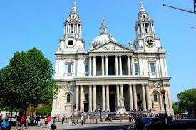
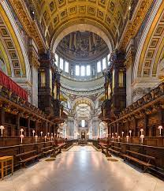

CATEDRAL DE ST. PAUL
LOCATION
ㅤ
St. Paul's Cathedral is located in the city of London, capital of the United Kingdom. More specifically, it is located in the area known as the City of London, in the central region of the city. The cathedral occupies a prominent position on Ludgate Hill, one of the highest hills in the city, offering impressive views of its surroundings.
CURIOSITIES
ㅤ-Historic Reconstruction: The current cathedral is the fifth church to be built on the same site. Paul's first cathedral was built in the 7th century, and the current structure was built after the Great Fire of London in 1666.
ㅤ-Stunning architecture: The cathedral is an architectural masterpiece of the English Baroque period, designed by architect Sir Christopher Wren. Its dome is one of the largest in the world and stands out in the London skyline.
ㅤ-Symbol of resistance: During the Second World War, the cathedral became a symbol of resistance and hope for the British people. Despite heavy bombing, the cathedral remained standing and was a symbol of resilience and determination.
ㅤ-Legends and myths: There are several legends and myths associated with the cathedral. One says that if you speak in a low voice near St. Paul's Chair (St. Paul's Whispering Gallery), your whisper can be heard clearly across the gallery, 100 feet away.
ㅤ-Famous Films: St. Paul's Cathedral has been the setting for numerous film productions, including popular films such as "Mary Poppins" (1964), "V for Vendetta" (2005) and "Harry Potter and the Half-Blood Prince" (2009).
ㅤ-The majestic interior: The interior of the cathedral is equally impressive, with rich decoration and elaborate details. Visitors can enjoy the colorful stained glass windows, sculptures, altars and mosaics that adorn the sacred space.
ㅤ-Final Rest of Notables: St Paul's Cathedral is the final resting place of many notable historical figures, such as Sir Christopher Wren himself, who designed the cathedral, and the Duke of Wellington, famous for his victory over Napoleon at the Battle of Waterloo.

HISTORY
ㅤThe history of St. Paul's Cathedral dates back to the 7th century, when a church dedicated to St. Paul was built on the same site where the cathedral stands today. That original church was replaced by a second cathedral in the 11th century, which also ended up being destroyed in a fire.
In 1087, construction of a new cathedral began under the supervision of Bishop Maurice. This third cathedral was completed in the mid-12th century, but it too suffered significant damage in a fire in 1561. After the fire, the cathedral was rebuilt, but was eventually severely damaged during the Great Fire of London in 1666.
After the Great Fire, architect Sir Christopher Wren was commissioned to design and rebuild the cathedral. Construction on the current cathedral began in 1675 and was completed in 1710. Wren designed the cathedral in the English Baroque style, with an impressive dome and ornate façade.
ㅤOver the centuries, St. Paul's Cathedral has undergone several restorations and improvements. During World War II, the cathedral was bombed, but it remained intact. Their resilience and survival were a symbol of hope and resilience for the British people.
Today, St Paul's Cathedral is one of London's most iconic landmarks and a major tourist attraction. In addition to serving as a place of worship and worship, the cathedral also hosts special events such as royal weddings and funerals for notable figures.
The history of St Paul's Cathedral is rich and full of significant events, reflecting not only architectural evolution but also the cathedral's resilience and religious and cultural importance over the centuries.
CULTURAL IMPACT
ㅤ
St. Paul's Cathedral has had a significant cultural impact throughout its history. As an iconic symbol of London, its impressive architecture and imposing presence have made it an internationally recognized landmark. In addition to being a place of worship and worship, the cathedral hosts cultural events, influences architecture, holds national ceremonies and attracts tourists. Its cultural importance is rooted in its history, its architectural influence and its role as a site of religious and cultural significance.
